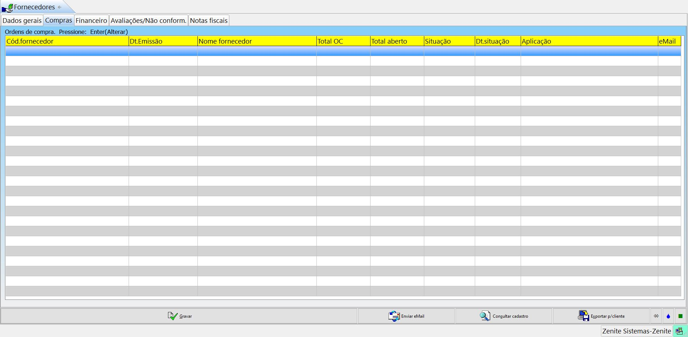

Aqui ficará a lista com todos os fornecedores, vendedores e agências cadastrados no sistema.
Todas as outras opções funcionarão da mesma forma do cadastro do cliente.
grade Quando o cliente diz: "Dar entrada do xml do fornecedor no financeiro", ele se refere ao campo "Financeiro > NFs de fornecedores > importar XML".
Tipo: (Com.Especial) receberá comissionados internos e especiais
Situação: Os fornecedores suspensos ou inativos serão impedidos de emitir ordem de compras ou dar entrada de material no estoque. Se o usuário não utilizar o menu "estoque" servirá apenas para filtros e relatórios.
gradeFornecedores e comissionados estão juntos no mesmo menu, pois ambos geram despesas para a gráfica. No GS, eles ficam separados.
Grupo1/2: Segmentam os fornecedores em grupos. Não são os mesmos grupos dos clientes.
Prazo pgto padrão: Será importado no prazo de pagametno de um fornecedor.
Cód. plano contas padrão: Vincula um fornecedor a um plano de contas. Será carregada automaticamente no contas a pagar.
Banco pgto padrão: Informa de qual conta o dinheiro sairá para pagar os fornecedores.
Cobrança padrão: Cobrança padrão dos pagamentos realizados.
CFOP entrada padrão: Irá preencher automaticamente o campo CFOP destino ao importar o XML da NFe para aquele fornecedor.
grade CFOP: Código fiscal de operações e prestações.
N°Bco: Número do banco
Certificações ISO: Certificações de qualidade que o fornecedor possui.
RNTRC: Registro nacional de transportadores rodoviários de carga.
Permite CP com doc. duplicado: Permite queo usuário faça varias entradas no contas a pagar com o mesmo número de nota.
Dt.Ult.Contato: É atualizado manualmente ou quando o usuário gera uma O.S.
Dt.Ult.Compra: É atualizado manualmente ou quando o usuário gera uma entrada.
Contatos: (tabela) - Devem ser cadastrados os contatos dos fornecedores.
Com.padrão: Define a comissão padrão atribuida a esse vendedor.
Encargos: Serão preenchidos quando a comissão do vendedor tiver encargos.
Markup padrão: Só será habilitado para agência e comissão especial.
Forma de pagamento: Influenciará diretamente o campo "financeiro > pagamento de commisões"
Dia pgto: Defini o dia de pagamento da comissão.
Com. de títulos:
- (Liquidados) A comissão será paga após o pagamento do título.
- (Emitidos) A comissão será paga quando o título for emitido.
Reduzir/ Aumentar CV cf redução de MU: Reduz a comissão de venda conforme a redução do markup.
% Reduzir na CV: Essa porcentagem irá incidir sobre a diferença percentual do novo markup.
Exemplo: Imagine um orçamento com MU=50% e CV=40%, teve redução de 10% do MU, logo, 50% da redução de 10% é igual a 5% (o "% reduzir no CV do vendedor era 50%"), ou seja, será reduzido da CV 5%, e então, o CV passará a ser 5% no final dos cálculos. A mesma lágica valerá para o "% Repasse MU"
%Com.min. | %Com.máx: Percentual mínimo e máximo aplicado ao vendedor.
Cód.cad.cliente/ Cód vendedor: Só são habilitados para agências. Caso a agência também for cliente da gráfica, ela será vinculada aqui. Caso a venda seja feita por uma agência e um vendedor também tenha que receber comissões, ela será vinculada aqui.
Cód.especial: Vincula um comissionado especial a um vendedor. EX: Um gerente que receberá uma comissão sobre cada venda feita. Será indicado aqui, somente para ativar o percentual da comissão, porém, o comissionado específico (especial ou agência) deverá ser indicada ao gerar a O.S.
Descrição carta proposta: Deverá ser preenchido com o cargo do funcionário. Se estiver em branco, o vendedor não será mostrado na carta proposta.
Imprimir fone carta proposta: Indica se o telefone será apresentado ao lado do nome do funcionário na carta proposta.
A primeira tabela mostra as metas e quanto foi vendido pelo comissionado.
A segunda tabela é para acrescentar contatos que serão visitados pelo vendedor/representante.

Aqui ficarão todas as OCs feitas para o fornecedor.
Serão apresentados todos os adiantamentos feitos para os fornecedores e adiantamentos de comissões feitas aos vendedores. Além dos CPs referentes aos fornecedores.
CP em atraso: São as contas a receber atrasadas.
CP a vencer: São as contas a receber que não foram pagas, mas que ainda não venceram.
CP aberto: (CP em atraso + CP a vencer).
CP liquidado: São todas a contas a receber que foram pagas.
CP total: (CP aberto + CP liquidado).
Atraso médio: É o atraso médio dos títulos do CP.
grade Caso algum campo de totais não esteja apresentando valores, provavelmente o valor ultrapassou o máximo de caracteres aceitos pelo campo. Essa informação continuará disponível no respectivo menu.
Estoque: Serão apresentadas todas as NFs de fornecedores importadas.